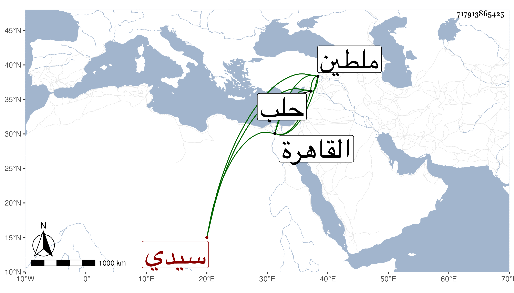

0902Sakhawi.DawLamic.ITO20230111-ara1.EIS1600.717913865425
Biography ID: 717913865425
861
ازدمر سيدي أوشا به أحد الأمراء الكبار نقل لنيابة ملطيه في أول سنة ثلاثين ثم رجع إلى حلب أميرا ومات بها في سادس ربيع الآخر سنة إحدى وثلاثين وكان من مماليك الظاهر برقوق ثم صار من أتباع شيخ فلما تسلطن أمره قاله شيخنا في أنبائه وأرخه العيني في جمادى الأولى قال ولم يكن مشكورا ، وقال غيره أنه كان ذميم الأوصاف والأفعال وترجمه فقال ازدمر من على خان عز الدين الظاهري برقوق ويعرف بأزدمر سيا أحد مقدمي القاهرة ثم نائب ملطية ثم أحد أمراء حلب وبها مات في ربيع الآخر .
